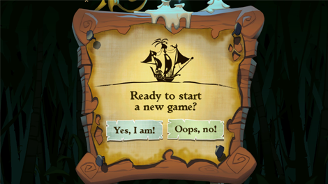
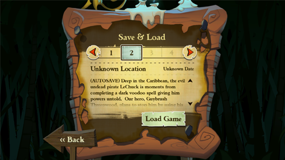
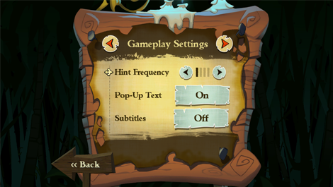
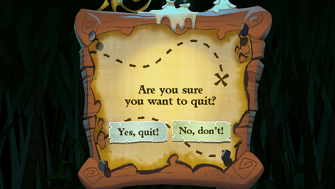
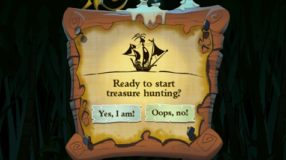

7 |
Iniziare il Gioco |
 |
| Scegli il gioco, nel menu Wii. Si caricherà lo schermo del Canale Anteprima. Per avviare l'episodio, porta il puntatore su Avvia e premi il pulsante A. Così si aprirà il menu principale.
 Il menu principale dà accesso alle seguenti opzioni:

Punta verso New Game e premi il pulsante A. Quando ti viene indicato, scegli Yes, I am! e premi il pulsante A, per iniziare la nuova avventura, oppure su Oops, no!, se vuoi tornare al menu principale.

Punta verso Save & Load e premi il pulsante A. È sempre importante salvare i tuoi progressi. Il gioco utilizza una funzione di salvataggio automatico che si attiva durante la partita, in momenti importanti. Ogni salvataggio automatico cancella quello precedente quindi, se vuoi la possibilità di tornare in seguito a giocare diverse parti del gioco, ricorda di salvare in un altro slot. Per salvare o caricare manualmente la partita, entra nel menù Save & Load, premi il pulsante A per scorrere a sinistra o destra con le frecce, scegli il numero di uno slot e premi il pulsante A su Save Game o Load Game. Per tornare al menu principale, seleziona Back o premi il pulsante B.
Punta verso Settings e premi il pulsante A. In questo schermo puoi cambiare le impostazioni di gioco. Puoi alternare tra Gameplay Settings e Audio Settings, puntando verso le frecce e premendo il pulsante A. Per tornare al menu principale, seleziona Back o premi il pulsante B.

 Per controllare individualmente le impostazioni audio, punta verso le frecce e premi il pulsante A.
Nota: Alcuni rompicapo utilizzano gli effetti sonori, quindi non è consigliato azzerarne il volume.

Punta verso Quit e premi il pulsante A. Quando ti viene chiesto, seleziona Yes, quit! e premi il pulsante A, per andare al menu Wii, oppure No, don't! se vuoi tornare al menu principale.

Gli dèi Tiki sono sotterrati in tutta l'Isola di Flotsam, ciascuno protegge un prezioso tesoro. Per trovare i Tiki, segui le mappe. Punta verso Treasure Hunting e premi il pulsante A. Quando ti viene chiesto, seleziona Yes, I am! e premi il pulsante A per iniziare la Caccia al Tesoro, oppure Oops, no! se vuoi tornare al menu principale. |
 |
 |
 |